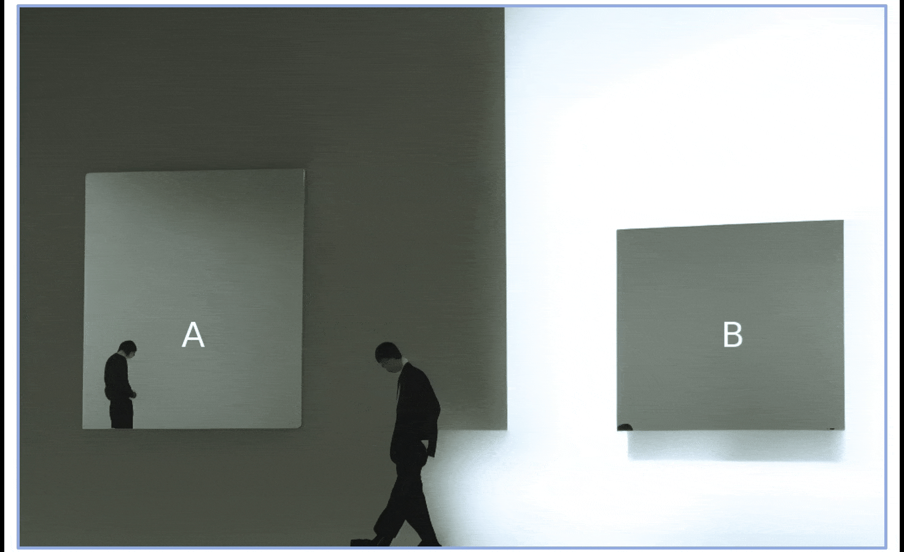
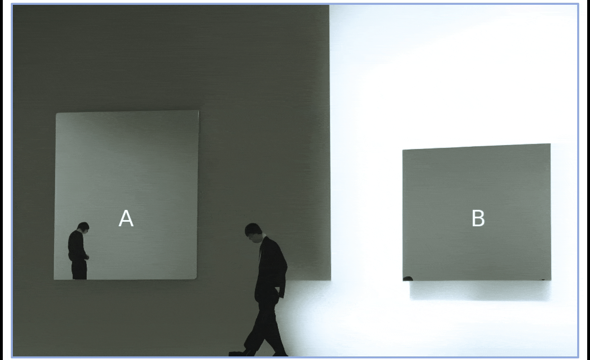
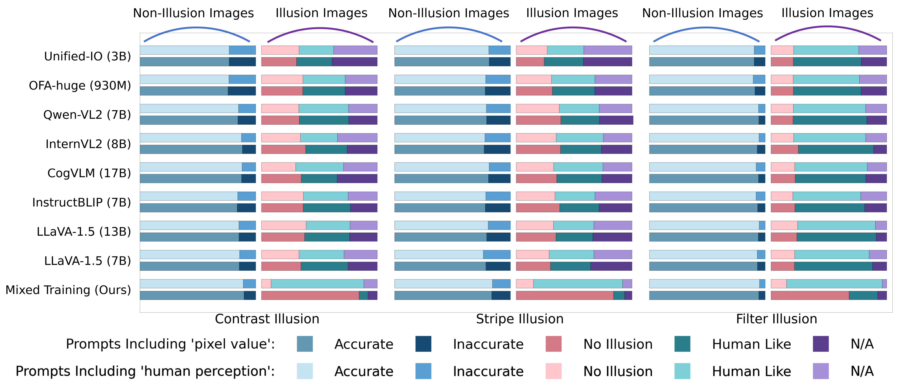
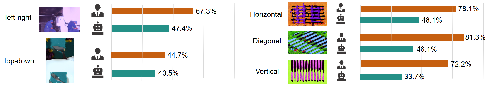
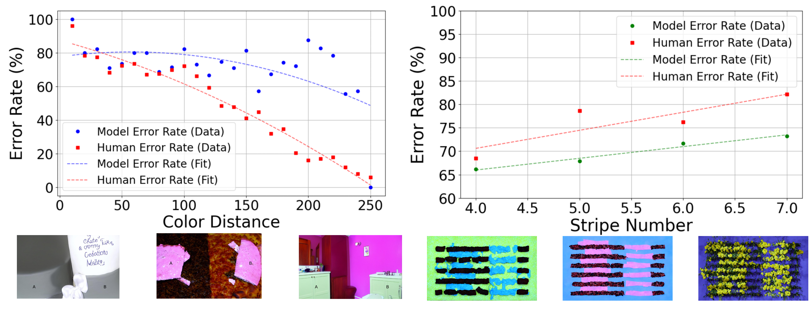
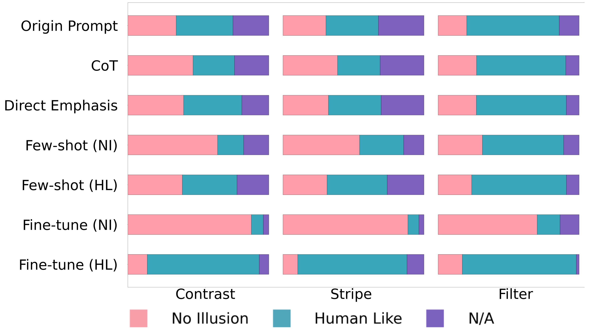
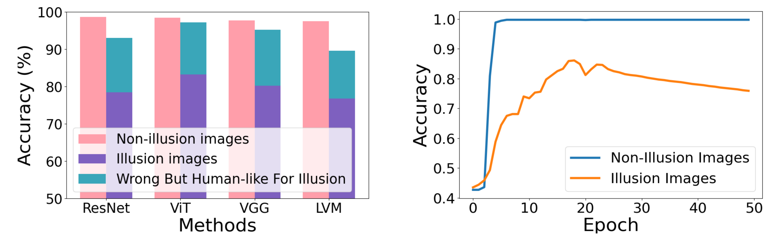

Illusion Dataset Construction

Some prior works have also attempted to explore VLMs' performance on visual illusions. However, existing datasets have a drawback: they directly use illusion images found on the web. Most images (e.g., 60% for the IllusionVQA dataset) are well-known examples of these illusions; thus, VLMs have likely memorized humanlike behavioral responses to them, rather than relying on perceptual reasoning.
Additionally, the limited scale restricts the depth and variety of analyses that can be conducted. Therefore, we generated a larger-scale color illusion dataset, embedding color illusions into realistic world scenarios.
The construction of our dataset involves three steps:
- Image Generation. For contrast and stripe illusions, we use procedural code to generate simple illusion images, which are then processed by ControlNet to create realistic illusion images. For filter illusions, we directly apply contrasting color filters to the original images. Each type of illusion also includes a corresponding control group without any illusions for comparison.
- Question Generation. We use GPT-4o to generate image-specific questions that are designed to evaluate the model's understanding of the illusion.
- Human Feedback. We collect human participants' feedback on these images and adjust the original classification of “illusion” and “non-illusion” based on whether participants are deceived.
Data statistics of RCID
Main Results
We evaluate a range of open-source vision-language models using generated illusion and non-illusion images in our development set, with questions explicitly asking for color judgments 'Based on pixel values' or 'Based on human perception'. The results show that, after fine-tuning on non-illusion images, these models achieve high accuracy (75%) on non-illusion images, while their accuracy on illusion images is significantly lower. We find that explicitly querying for color judgments 'Based on pixel values' or 'Based on human perception' does not lead to significant changes in model performance. In addition, models are likely to produce responses that are completely inaccurate, matching neither pixel values nor human perception. This suggests that while the models are misled by color illusions to some extent, they still struggle to fully model human perception.
Experiment Analysis
1. Factors affecting the strength of color illusions
We explore a range of visual factors that may influence the strength of color illusions and compare whether these factors affect human perception and VLMs in the same way. We focus on three potential influencing factors: the orientation of the illusion, the contrast between foreground and background colors (for contrast illusions only), and the number of stripes (for filter illusions only). Overall, our findings indicate that these factors significantly impact the strength of the illusion. For example, altering certain factors, such as increasing the color contrast between the foreground and background, can turn a non-illusion image into an illusion image. And these effects are consistent across both humans and VLMs. In these experiments, we use LLaVA-1.5 (7B) as our tested model.
Deception rates of humans and VLMs across different structural patterns:
Error rates of humans and LLaVA across different conditions in color illusions:
2. The impact of prompting methods and fine-Tuning on model performance
We investigate whether external prompts can influence VLM responses. Unlike the main experiments illustrated in Figure X, here we aim to identify the model's bias toward predicting answers based on either human-like perception or pixel-level values, without explicitly specifying this distinction in the question.
To achieve this, we evaluate several prompting methods: (1) a simple prompt that focuses solely on questions about color comparisons; (2) chain of thought (CoT), where the model is guided to first consider factors in the image that might affect color perception; (3) emphasizing the illusion by explicitly informing the model that the image contains an illusion, without specifying its type; and (4) providing few-shot examples, using either no-illusion (NI) answers or human-like (HL) answers as 3-shot examples.
Additionally, we also explore whether fine-tuning the model on no-illusion (NI) or human-like (HL) examples can improve its understanding of color illusions.
3. Purely vision-based models (e.g., CNNs) can also be deceived by visual illusions.
To investigate whether VLMs' perceptual biases originate from their visual components, we test a range of purely visual models. We design a simple classification task based on simple rectangle-based contrast illusions. n this task, we generate backgrounds with varying brightness on both sides and place a rectangle on each side. The vision model is trained as a three-way classifier on 6,000 non-illusion images to predict which rectangle appears darker, or if their colors are identical, stopping when the loss shows no significant decrease. It is then tested on 1,000 non-illusion and 1,000 illusion images.
BibTeX
@misc{mao2024evaluatingmodelperceptioncolor,
title={Evaluating Model Perception of Color Illusions in Photorealistic Scenes},
author={Lingjun Mao and Zineng Tang and Alane Suhr},
year={2024},
eprint={2412.06184},
archivePrefix={arXiv},
primaryClass={cs.CV},
url={https://arxiv.org/abs/2412.06184},
}